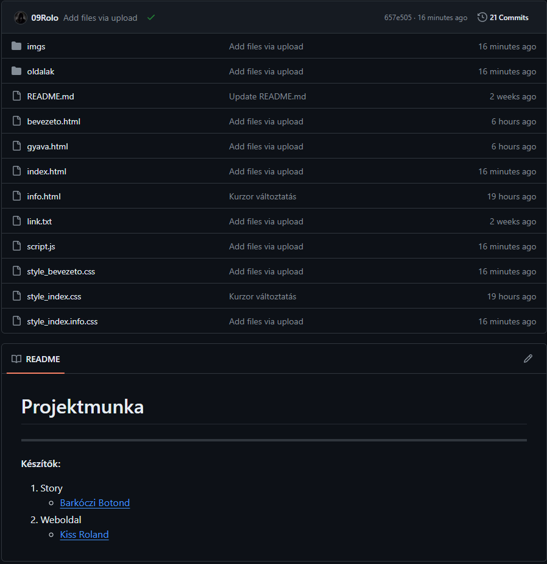
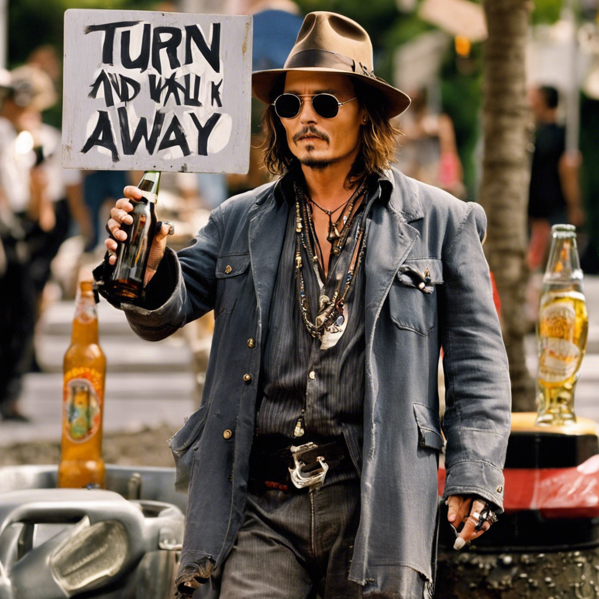
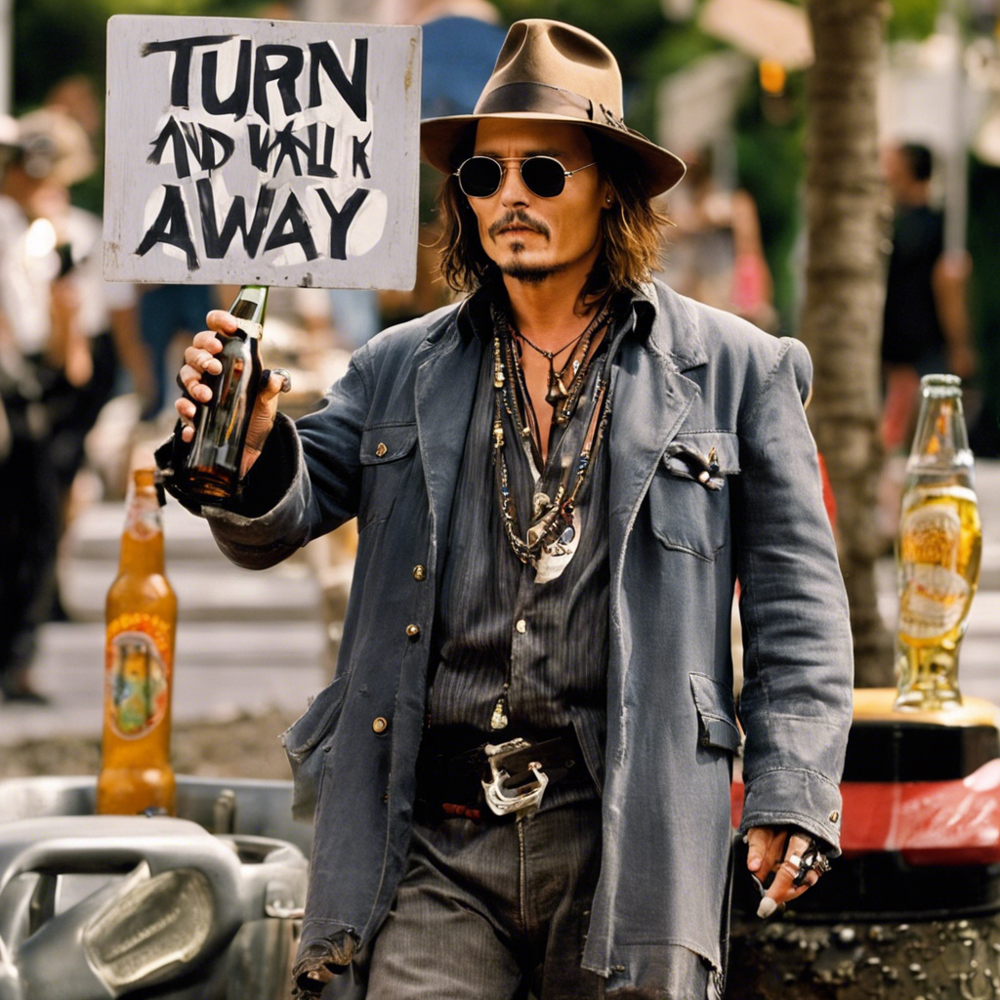

Készítők:
- Story
- Weboldal
A feladatok a kalandjáték projektmunkára készítettük el. Reméljük tetszik mindenkinek

Rengeteg karaktert próbáltunk meg beleépíteni a történetbe
Így megpróbáltuk a lehető legszínesebbé és legélvezhetőbbé tenni a játékot
Illetve szeretnénk még tisztázni, hogy semmilyen valós személyt nem szerettünk volna rossz szerepben feltünteni, és reméljük ti sem gondoljátok őket bele


 
